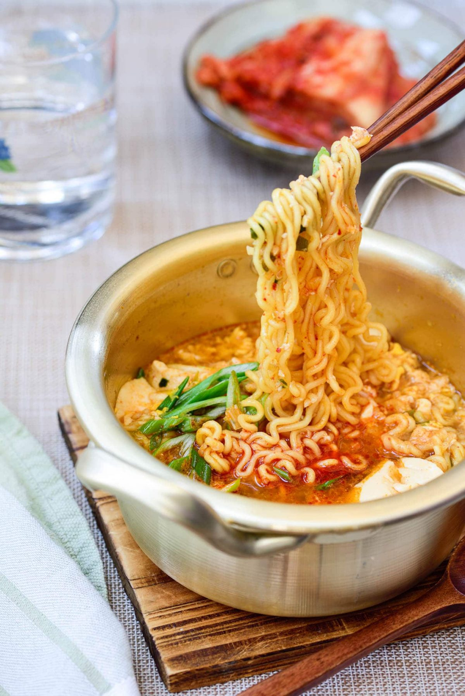

Tofu Ramyun

Description
The recipe basically adds sundubu to a spicy ramyun noodle soup. It’s like having sundubu jjigae and ramyun in one dish. It also replaces a half of ramyun noodles with high protein soft tofu
Ingredients
- 1/2 package of sundubu
- 1/2 spicy ramyun
- 1 tbs chopped scallion
- 1/2 tsp minced garlic
- 1/2tbs sesame oil
- 1/4 gochugaru
- 1 egg
- pinch pepper
Steps
- Add the sesame oil, garlic and 1/2 of the ramyun seasoning mix and optional gochugaru to a small pot and mix well over medium heat for a few seconds.
- Add 1 cup of water. Turn the heat up to medium high. When water boils, add the sundubu in big chunks, and bring it to a boil.
- Add 1 cup of water. Turn the heat up to medium high. When water boils, add the sundubu in big chunks, and bring it to a boil.
- Crack an egg straight over the noodles. You can break the egg yolk and stir into the soup if you want. Turn the heat off, and drop the scallion in, and sprinkle with pepper to taste.
<